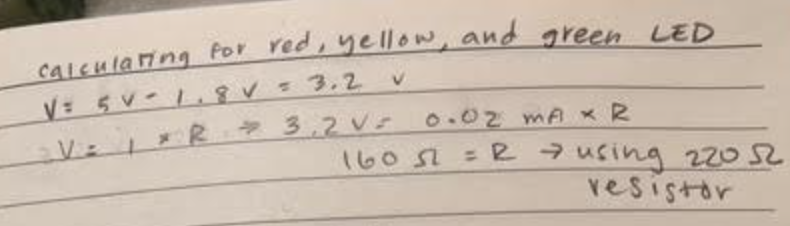
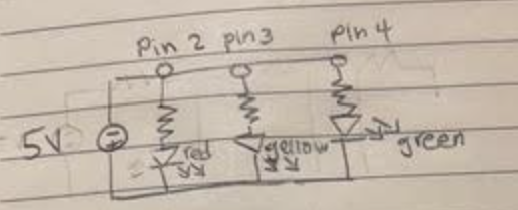

Overview
For this assignment, I created a circuit that blinks 3 LED lights indepdendently. First, I calculated the resistors I needed for the circuit. Then, I set up the circuit on a breadboard and wrote the code to make the lights blink.
 Code
Here is the code I used to make the LED blink:
int red = 2; //red led connected to pin 2
int yellow = 3; //red led connected to pin 3
int green = 4; //green led connected to pin 4
void setup() { // initialize digital pin LED_BUILTIN as an output.
pinMode(red, OUTPUT);
pinMode(yellow, OUTPUT);
pinMode(green, OUTPUT);
}
void loop() {
//red
digitalWrite(red, HIGH); // on
delay(1000); // wait for a second
digitalWrite(red, LOW); // off
//yellow
digitalWrite(yellow, HIGH); // on
delay(1000); // wait for a second
digitalWrite(yellow, LOW); // off
//green
digitalWrite(green, HIGH); // on
delay(1000); // wait for a second
digitalWrite(green, LOW); // off
}
Additional Questions
1. This is my graph of the voltage across the LED over time:

2. An arduino can source 200 mA of current altogether. Each pin can supply 20 mA of current, so the total number of pins that can be used at once is 10. This means that the total current should not exceed 200 mA.
4. I would have to blink my LEDs at a must faster rate than currently to make it appear as if they are not blinking. To answer this question, I looked up the "flicker fusion threshold" which is the frequency at which a flickering light source can be viewed by a human as a steady light. This threshold is typically around 60 Hz, so I would have to blink my LEDs at a rate faster than 60 times per second.
5. I used AI tools when helping with answering the additional questions. I mostly asked it to help me
to identify concepts so I could find resources to answer the questions better. For example, I was confused on
how to answer question 4, so I asked chatGPT to explain what I needed to understand to answer the question, which
is how I learned about "flicker fusion threshold".